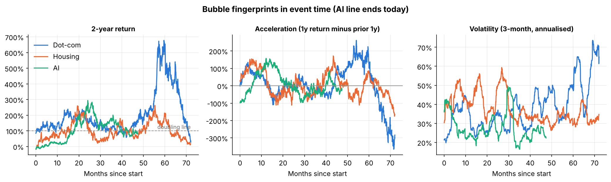
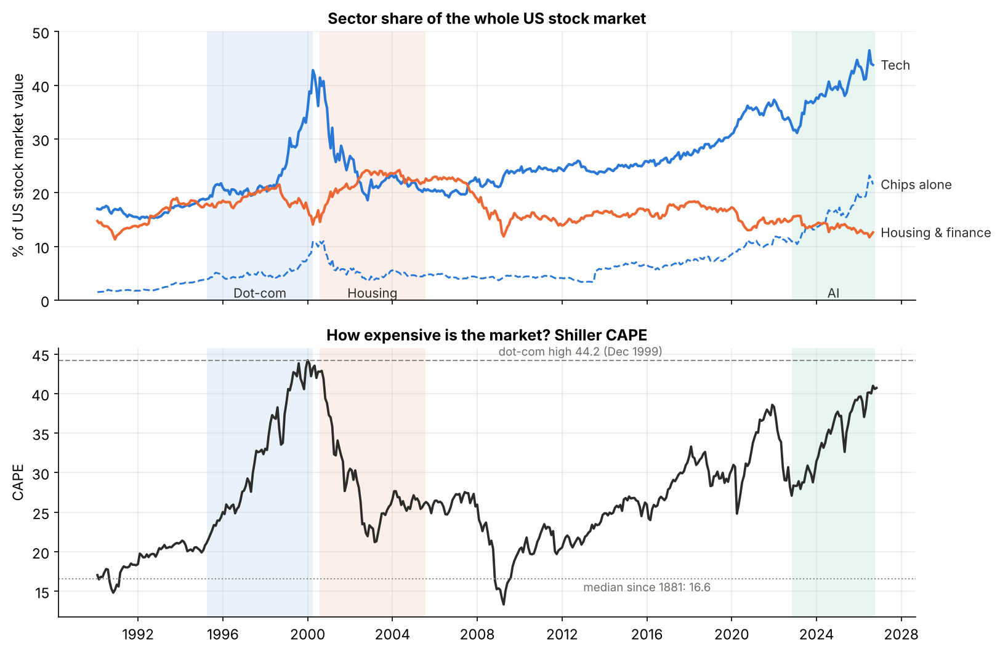
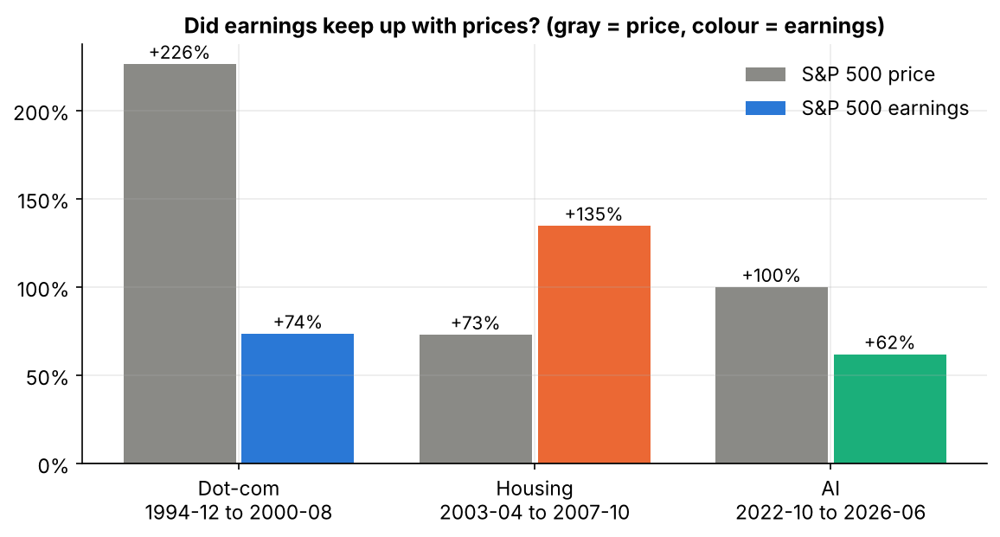
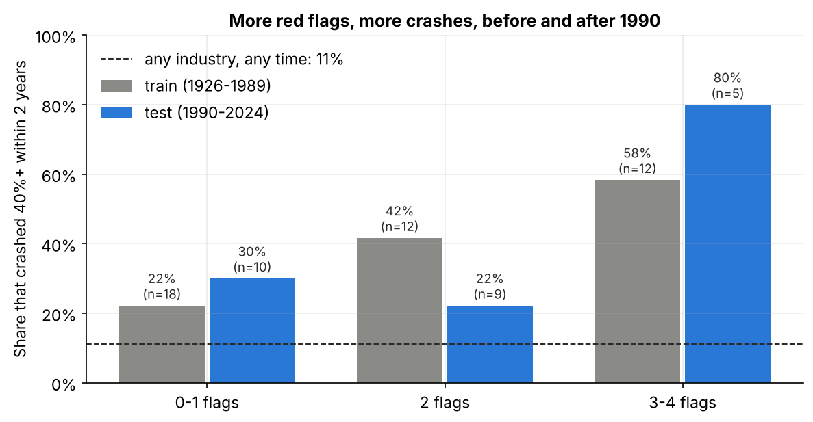
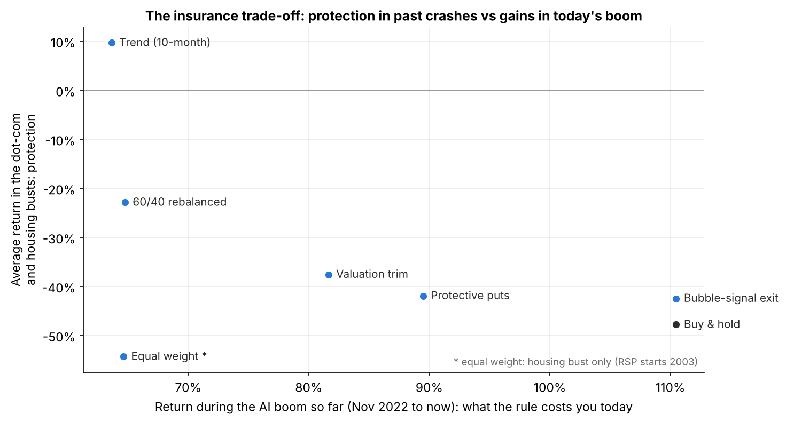
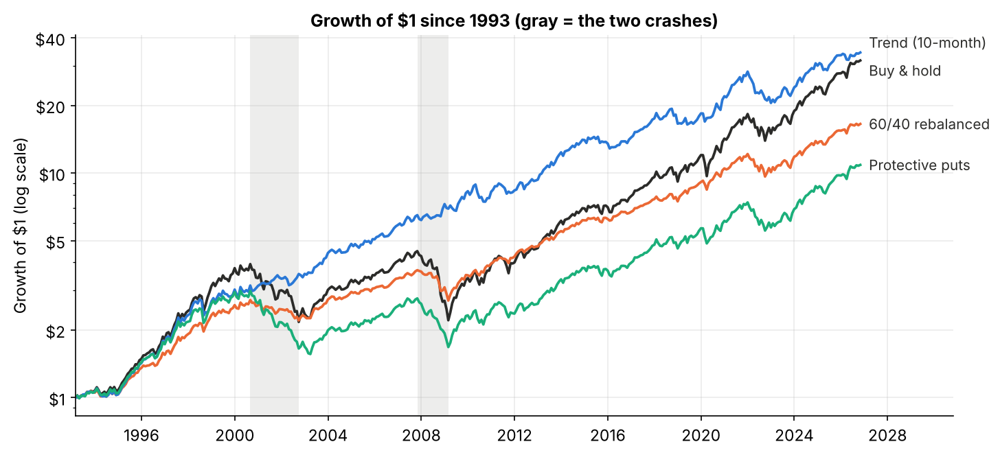

The question
"Is it a bubble?" is usually answered with stories. This study puts the three big booms of the last 30 years through the same measurements: speed, acceleration, volatility, concentration, valuation and earnings.
A bubble can only be proven after it pops, so I don't try to call the top. The honest goals are to show where AI sits on the path, and what it costs an ordinary investor to protect against a crash.
Data and method
Daily prices from January 1990 to October 2026, Shiller's S&P 500 valuation data, and Kenneth French's 49 US industries back to 1926, which give 69 industry run-ups (66 with a known outcome).
| Piece | Choice |
|---|---|
| Leaders | Equal-weighted baskets. Dot-com: CSCO, INTC, MSFT, ORCL, QCOM. Housing: LEN, DHI, KBH, PHM, TOL. AI: NVDA, MSFT, GOOGL, META, AMZN, AVGO, TSM |
| Boom dates | Peak = highest close; start = lowest close in the 5 years before it. One mechanical rule, so dates can't be cherry-picked. It chose November 2022 for AI, the month ChatGPT launched |
| Valuation | Shiller CAPE (price over 10-year average real earnings) and S&P 500 earnings, monthly since 1871 |
| Concentration | Each sector's share of total US market value, from French's industry data, which includes firms that no longer exist |
| Warning test | Greenwood, Shleifer & You (2019): an industry doubles in 2 years and beats the market by 100 points. A crash is a 40% fall within the next 2 years |
| Train / test | Red-flag cut-offs set on pre-1990 run-ups only. Dot-com, housing and the 2020s are all out of sample |
| Playbook | Monthly rules using SPY, IEF (bonds), RSP (equal weight) and index puts, with a 5bp trading cost |
The chart at the top of this page lines the three booms up by months since each one started. Hover over it to compare them at the same point.
Finding 1: AI is on the dot-com path in price, but not in acceleration
| At the peak (AI: so far) | Dot-com | Housing | AI |
|---|---|---|---|
| Months since start | 60 | 60 | 47 |
| Leader basket growth | 29.8x | 9.6x | 7.1x |
| Leaders' 2-year return | +669% | +214% | +79% |
| Acceleration (1-year return minus the year before) | +182% | +86% | −22% |
| Volatility (3-month, annualised) | 50% | 29% | 22% |
The AI leaders looked most bubble-like in 2023–2024. Since then the climb has flattened rather than gone vertical: their two-year return has fallen from +294% in November 2024 to +79%. The exception is chips, where the semiconductor index nearly doubled from March to June 2026, then fell almost 30% by late July.

Finding 2: concentration is the real outlier
| Dot-com peak | Housing peak | AI today | |
|---|---|---|---|
| S&P 500 CAPE | 43.2 | 26.3 | 40.7 |
| Tech share of US market | 43% | 20% | 44% |
| Chips share of US market | 11% | 5% | 22% |
| Housing and finance share | 14% | 23% | 13% |
An S&P 500 index fund today is at least as exposed to tech as it was in 2000, and twice as exposed to one industry, chips. Housing barely registered on these gauges because it was a debt bubble: the overpriced asset was houses, not stocks.

Finding 3: earnings are doing more of the work this time
| S&P 500 boom | Price | Earnings | P/E change | Share of gain from earnings |
|---|---|---|---|---|
| Dot-com (Dec 1994 to Aug 2000) | +226% | +74% | +88% | 47% |
| Housing (Apr 2003 to Oct 2007) | +73% | +135% | −26% | 156% |
| AI (Oct 2022 to Jun 2026) | +100% | +62% | +23% | 70% |
This is the strongest evidence against calling AI a dot-com rerun. Housing shows the caveat: earnings can be inflated by the boom itself, and the AI leaders' profits depend on everyone else continuing to spend on AI.

Can you see a crash coming?
Across all 49 industries since 1926, a run-up roughly triples the chance of a crash: 38%, against an 11% base rate. But most run-ups don't crash, and on average the industry still returned +7% over the next two years (the market: +11%). "It doubled, so sell" is wrong more often than right.
A red-flag count does better. It scores four flags, each with a cut-off set before 1990: acceleration, volatility, growth in the number of listed firms (an IPO wave), and the size of the run-up.
| Red flags | Crash rate 1926–1989 (train) | Crash rate 1990–2024 (test) |
|---|---|---|
| 0–1 | 22% (18 run-ups) | 30% (10) |
| 2 | 42% (12) | 22% (9) |
| 3–4 | 58% (12) | 80% (5) |
After a 3–4 flag run-up, the median industry did 35 points worse than the market over the next two years. Dot-com software (March 1999) and chips (December 1999) both had 3 flags and crashed. Housing showed up only as construction in December 2004, which fired too early: the homebuilders kept rising for another seven months.

Where AI stands today. Chips came within 3 points of formally triggering in December 2024 (up 156%, 97 points ahead of the market), and computer hardware triggered in May 2026. Both show 2 of 4 flags. There is no IPO wave, since the number of listed chip companies is falling, and acceleration has cooled.
The retail investor's playbook
Six things anyone can do in a brokerage account, tested through both crashes and the AI boom so far:
| Rule | Dot-com boom | Dot-com bust | Housing boom | Housing bust | AI boom so far | Worst fall | Yearly return |
|---|---|---|---|---|---|---|---|
| Buy and hold S&P 500 | +265% | −45% | +82% | −51% | +110% | −51% | 11% |
| 60/40, rebalanced yearly | +163% | −19% | +56% | −27% | +65% | −27% | 9% |
| Trend (10-month average) | +205% | +13% | +81% | +7% | +64% | −27% | 11% |
| Valuation trim (CAPE top 10%) | +183% | −27% | +58% | −48% | +82% | −48% | 10% |
| Bubble-signal exit | +246% | −34% | +82% | −51% | +110% | −51% | 11% |
| Protective puts (10% below, quarterly) | +185% | −45% | +66% | −39% | +89% | −48% | 7% |
| Equal weight (RSP, from 2003) | n/a | n/a | +89% | −54% | +65% | −56% | 11% |

- Trend following was the only rule that made money in both crashes. Its costs are 47 switches in 33 years (a tax problem outside retirement accounts), whipsaws in sharp V-shaped drops like spring 2025 and 2026, and a large lag in the AI boom.
- Rebalanced 60/40 is the no-forecast option. It takes about half of each crash and about half of each boom.
- Valuation trims barely help, because CAPE has been in its historical top 10% in 77% of months since 1993.
- The bubble signal fired in 1999 and softened the dot-com bust, but it never fired for housing (a debt bubble) or AI.
- Puts cost about 4 points a year, and quarterly puts 10% below the market let most of a slow, grinding crash through.
- Equal weight lagged badly in the AI boom because the giants did the work. It is still the most direct hedge against today's specific risk, which is concentration.

What it means for an investor
- Know what you own. An S&P 500 fund is now roughly a 44% bet on tech and a 22% bet on chips.
- Choose your protection before you need it, and accept its price. The historical evidence favours rebalancing or a trend rule over valuation timing or buying insurance. Neither is free.
- Watch the red flags, not the headlines. A 3–4 flag reading in chips or hardware, meaning acceleration plus an IPO wave, has historically marked the dangerous phase. Today they show 2 of 4.
Limitations
- Survivorship bias in the leader baskets. Yahoo only lists companies that still trade, so Pets.com, Sun, Countrywide and Lehman are missing and the leaders' crashes look milder than they were. The French industry data includes dead firms.
- Small samples. 66 run-ups in total, and only 5 test events with 3–4 flags.
- Debt is invisible here. Stock-market gauges barely saw the housing bubble, which was built on mortgage credit.
- Option prices are estimated. Puts are priced with Black-Scholes at the VIX plus 4 points; real costs varied.
- No taxes. Every switch in a taxable account can trigger capital gains, which hurts the trend rule most.
Data: Yahoo Finance (stocks, indexes and ETFs), Robert Shiller's S&P 500 data (Yale), and the Kenneth French Data Library (49 industry portfolios and market factors).
← Previous project
Project 2: Cross-Asset Correlation Regime Decomposition Study
When does the stock-bond hedge fail, and can you trade it?